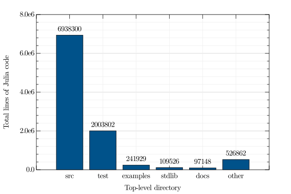

A look at the General registry
First, let's load in the data.
using Arrow, AnalyzeRegistry, DataFrames
Arrow.ArrowTypes.registertype!(AnalyzeRegistry.Package, AnalyzeRegistry.Package)
# https://github.com/JuliaData/Arrow.jl/issues/132
Arrow.ArrowTypes.JULIA_TO_ARROW_TYPE_MAPPING[Nothing] = ("JuliaLang.Nothing", Nothing)
Arrow.ArrowTypes.ARROW_TO_JULIA_TYPE_MAPPING["JuliaLang.Nothing"] = (Nothing, Nothing)
load(path) = copy(Arrow.Table(path).packages)
results = load("assets/all_pkgs_results.arrow")
# https://discourse.julialang.org/t/slowness-of-fieldnames-and-properynames/55364/2
@generated function named_tuple(obj::T) where {T}
NT = NamedTuple{fieldnames(obj), Tuple{fieldtypes(obj)...}}
return :($NT(tuple($((:(getfield(obj, $i)) for i in 1:fieldcount(obj))...))))
end
df = DataFrame(named_tuple.(results))
sort!(df, :name)
df[1:5, Not([:uuid, :lines_of_code, :license_files])]| name | repo | subdir | reachable | docs | runtests | github_actions | travis | appveyor | cirrus | circle | drone | buildkite | azure_pipelines | gitlab_pipeline | licenses_in_project | |
|---|---|---|---|---|---|---|---|---|---|---|---|---|---|---|---|---|
| String | String | String | Bool | Bool | Bool | Bool | Bool | Bool | Bool | Bool | Bool | Bool | Bool | Bool | Array… | |
| 1 | AAindex | https://github.com/jowch/AAindex.jl.git | 1 | 0 | 1 | 1 | 0 | 0 | 0 | 0 | 0 | 0 | 0 | 0 | [] | |
| 2 | ACME | https://github.com/HSU-ANT/ACME.jl.git | 1 | 1 | 1 | 1 | 0 | 0 | 0 | 0 | 0 | 0 | 0 | 0 | [] | |
| 3 | ACTRModels | https://github.com/itsdfish/ACTRModels.jl.git | 1 | 0 | 1 | 1 | 0 | 0 | 0 | 0 | 0 | 0 | 0 | 0 | [] | |
| 4 | AD4SM | https://github.com/avigliotti/AD4SM.jl.git | 1 | 0 | 0 | 1 | 0 | 0 | 0 | 0 | 0 | 0 | 0 | 0 | [] | |
| 5 | ADCME | https://github.com/kailaix/ADCME.jl.git | 1 | 1 | 1 | 1 | 1 | 0 | 0 | 0 | 0 | 0 | 0 | 0 | [] |
Here, we see some information about presence of docs, tests, and CI, for the first five packages (alphabetically). We omit the lines_of_code and license_files fields, since these are tables of their own that we'll look at next.
Lines of code
Let us assemble all of the lines_of_code tables into their own DataFrame.
loc_df = DataFrame()
for pkg in results
pkg_df = DataFrame(pkg.lines_of_code)
insertcols!(pkg_df, 1, :name => fill(pkg.name, nrow(pkg_df)))
append!(loc_df, pkg_df)
end
sort!(loc_df, :code; rev=true)
loc_df[1:10, :]| name | directory | language | sublanguage | files | code | comments | blanks | |
|---|---|---|---|---|---|---|---|---|
| String | String | Symbol | Union… | Int64 | Int64 | Int64 | Int64 | |
| 1 | BenchmarkFunctions | plots | SVG | 24 | 2995745 | 401 | 0 | |
| 2 | CalculusWithJulia | html | HTML | JavaScript | 65 | 1201439 | 0 | 1088 |
| 3 | MIToS | test | XML | 10 | 922969 | 0 | 22 | |
| 4 | Lints | deps | C Header | 52 | 844973 | 39064 | 2301 | |
| 5 | JsonGrinder | examples | JSON | 1 | 666921 | 0 | 0 | |
| 6 | Catalyst | docs | SVG | 10 | 298332 | 61 | 0 | |
| 7 | Catalyst | docs | SVG | 10 | 298332 | 61 | 0 | |
| 8 | CalculusWithJulia | html | HTML | 65 | 273442 | 256 | 15201 | |
| 9 | AWSSDK | src | Julia | 146 | 264115 | 1314 | 19217 | |
| 10 | SemanticModels | doc | HTML | Css | 20 | 232908 | 5461 | 71 |
We can see the largest entries by lines of code seem to be mostly generated code, like plots or HTML. Let's look at just at Julia language code in the src directory (with no sublanguage, i.e. it's not another language embedded inside Julia):
grps = groupby(loc_df, [:directory, :language, :sublanguage])
src_code = DataFrame(grps[(; directory="src", language=:Julia, sublanguage=nothing)])
sort!(src_code, :code; rev=true)
src_code[1:20, Not([:sublanguage])]| name | directory | language | files | code | comments | blanks | |
|---|---|---|---|---|---|---|---|
| String | String | Symbol | Int64 | Int64 | Int64 | Int64 | |
| 1 | AWSSDK | src | Julia | 146 | 264115 | 1314 | 19217 |
| 2 | AWS | src | Julia | 267 | 126736 | 353 | 9453 |
| 3 | Hecke | src | Julia | 306 | 122300 | 20173 | 18438 |
| 4 | TensorFlow | src | Julia | 93 | 115544 | 1555 | 3475 |
| 5 | OrdinaryDiffEq | src | Julia | 96 | 90600 | 5211 | 6722 |
| 6 | GSL | src | Julia | 192 | 69761 | 1040 | 6213 |
| 7 | DSGE | src | Julia | 290 | 58835 | 9061 | 10734 |
| 8 | Kuber | src | Julia | 775 | 54336 | 2187 | 6184 |
| 9 | ClimateMachine | src | Julia | 206 | 52408 | 2995 | 6256 |
| 10 | Metis | src | Julia | 1258 | 44766 | 2563 | 8161 |
| 11 | NIDAQ | src | Julia | 13 | 40913 | 48 | 9842 |
| 12 | GlobalSensitivityAnalysis | src | Julia | 11 | 40714 | 102 | 123 |
| 13 | MathOptInterface | src | Julia | 106 | 40466 | 2506 | 3511 |
| 14 | Nemo | src | Julia | 67 | 37810 | 7284 | 7712 |
| 15 | LazySets | src | Julia | 116 | 33470 | 1255 | 2696 |
| 16 | AbstractAlgebra | src | Julia | 55 | 29774 | 4222 | 3942 |
| 17 | StochasticPrograms | src | Julia | 148 | 27501 | 2239 | 1988 |
| 18 | PowerSystems | src | Julia | 146 | 26830 | 848 | 2255 |
| 19 | CuArrays | src | Julia | 80 | 25490 | 1085 | 3402 |
| 20 | Gridap | src | Julia | 145 | 24236 | 1245 | 4650 |
sum(src_code.code)6938300
We see there are almost 7 million lines of Julia source code in General!
using GRUtils
histogram(src_code.code, xlog=true, xlabel="Lines of Julia source code",
ylabel="Number of packages")
With a logarithmic x-axis, we see a nice unimodal distribution, centered around ~500 lines of code:
using StatsBase
summarystats(src_code.code)Summary Stats: Length: 4415 Missing Count: 0 Mean: 1571.528879 Minimum: 2.000000 1st Quartile: 201.000000 Median: 514.000000 3rd Quartile: 1380.500000 Maximum: 264115.000000
We can also generate a wordcloud with the names of the 500 largest packages:
using WordCloud
src_wc = generate!(wordcloud(src_code.name[1:500], src_code.code[1:500]))
paint(src_wc, "assets/src_wc.svg")
In the package folder, where does Julia code live?
dir_grps = groupby(filter(:language => isequal(:Julia), loc_df), :directory)
dir_df = sort!(combine(dir_grps, :code => sum => :loc), :loc; rev=true)
n_bars=6
heights = [dir_df.loc[1:(n_bars-1)]; sum(dir_df.loc[n_bars+1:end])]
labels = [dir_df.directory[1:(n_bars-1)]; "other"]
barplot(labels, heights; ylabel="Total lines of Julia code", xlabel="Top-level directory")
annotations(1:length(heights), heights .+ 0.03 * maximum(heights) , string.(heights), halign="center")
xticks(1)
Mostly in src, as expected! What's the most common non-Julia code in src?
grps = groupby(filter([:directory, :language] => ((d, l) -> d == "src" && l !== :Julia), loc_df), :language)
sort!(combine(grps, :code => sum, [:name, :code] => ((n, c) -> n[argmax(c)]) => :biggest_contributer, :code => maximum => :biggest_contribution), :code_sum; rev=true)[1:10, :]| language | code_sum | biggest_contributer | biggest_contribution | |
|---|---|---|---|---|
| Symbol | Int64 | String | Int64 | |
| 1 | C++ | 93898 | BrainFlow | 58138 |
| 2 | JavaScript | 86385 | DataVoyager | 69341 |
| 3 | JSON | 79922 | CUTEst | 40340 |
| 4 | C | 55366 | Invalid Project.toml | 50262 |
| 5 | FORTRAN Legacy | 26367 | ODEInterface | 20968 |
| 6 | CSS | 24751 | FranklinTemplates | 10279 |
| 7 | C Header | 20802 | WaveFD | 8946 |
| 8 | YAML | 7760 | Faker | 7211 |
| 9 | FORTRAN Modern | 7020 | ODEInterface | 6021 |
| 10 | SVG | 6956 | DataVoyager | 2671 |
We see code from a variety of different languages can live in src, but often most of the lines come from a single package. Note the "Invalid Project.toml"; this likely means the package in question does not have a Project.toml at all (and instead still has the old Requires file).
We could continue exploring this all day, but instead we suggest you download the data and do some digging yourself!
Licenses
license_df = DataFrame()
for pkg in results
pkg_df = DataFrame(pkg.license_files)
insertcols!(pkg_df, 1, :name => fill(pkg.name, nrow(pkg_df)))
append!(license_df, pkg_df)
end
sort!(license_df, :licenses_found; by=length, rev=true)
license_df[1:10, :]| name | license_filename | licenses_found | license_file_percent_covered | |
|---|---|---|---|---|
| String | String | Array… | Float64 | |
| 1 | FormatSpecimens | LICENSE.md | ["MIT", "Artistic-1.0-Perl", "GPL-2.0", "MIT", "MIT", "MIT", "BSD-3-Clause"] | 93.9799 |
| 2 | ODEInterface | LICENSE.md | ["MIT", "BSD-2-Clause", "LGPL-3.0", "BSD-3-Clause", "BSD-3-Clause"] | 82.8175 |
| 3 | VegaLite | LICENSE | ["MIT", "BSD-3-Clause", "BSD-3-Clause", "BSD-3-Clause", "BSD-3-Clause"] | 98.8971 |
| 4 | CommonMark | LICENSE | ["MIT", "BSD-2-Clause", "MIT", "MIT", "CC-BY-SA-4.0"] | 90.9561 |
| 5 | Bio3DView | LICENSE.md | ["MIT", "BSD-3-Clause", "MIT", "MIT", "MIT"] | 95.1992 |
| 6 | Vega | LICENSE | ["MIT", "BSD-3-Clause", "BSD-3-Clause", "BSD-3-Clause", "BSD-3-Clause"] | 98.8971 |
| 7 | GraphPlot | LICENSE.md | ["MIT", "MIT", "MIT", "BSD-3-Clause", "MIT"] | 93.6345 |
| 8 | ColorSchemes | LICENSE.md | ["MIT", "CC0-1.0", "Apache-2.0", "MIT"] | 73.4899 |
| 9 | NetworkLayout | LICENSE.md | ["MIT", "MIT", "MIT", "MIT"] | 92.3077 |
| 10 | PDFIO | LICENSE.md | ["MIT", "Zlib", "APAFML", "BSD-3-Clause"] | 47.2201 |